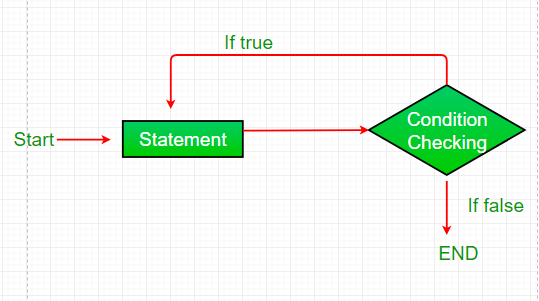

Iteration Statements
Looping in programming languages is a feature which facilitates the execution of a set of instructions/functions repeatedly while some condition evaluates to true. Java provides three ways for executing the loops. While all the ways provide similar basic functionality, they differ in their syntax and condition checking time.
- while loop:
- While loop starts with the checking of condition. If it evaluated to true, then the loop body statements are executed otherwise first statement following the loop is executed. For this reason it is also called Entry control loop.
- Once the condition is evaluated to true, the statements in the loop body are executed.Normally the statements contain an update value for the variable being processed for the next iteration.
- When the condition becomes false, the loop terminates which marks the end of its life cycle.
- for loop:
- Initialization condition: Here, we initialize the variable in use. It marks the start of a for loop. An already declared variable can be used or a variable can be declared, local to loop only.
- Testing Condition: It is used for testing the exit condition for a loop. It must return a boolean value. It is also an Entry Control Loop as the condition is checked prior to the execution of the loop statements.
- Statement execution: Once the condition is evaluated to true, the statements in the loop body are executed.
- Increment/ Decrement: It is used for updating the variable for next iteration.
- Loop termination:When the condition becomes false, the loop terminates marking the end of its life cycle.
- do while loop:
- do while loop starts with the execution of the statement(s). There is no checking of any condition for the first time.
- After the execution of the statements, and update of the variable value, the condition is checked for true or false value. If it is evaluated to true, next iteration of loop starts.
- When the condition becomes false, the loop terminates which marks the end of its life cycle.
- It is important to note that the do-while loop will execute its statements atleast once before any condition is checked, and therefore is an example of exit control loop.
A while loop is a control flow statement that allows code to be executed repeatedly based on a given Boolean condition. The while loop can be thought of as a repeating if statement.
Syntax:
while (boolean condition) { loop statements... }Flowchart

Code :
class whileLoopDemo
{
public static void main(String args[])
{
int x = 1;
// Exit when x becomes greater than 4
while (x <= 4) { System.out.println("Value of x:" + x); // Increment the value of x for // next
iteration x++; } } }
Output:
Value of x:1
Value of x:2
Value of x:3
Value of x:4
for loop provides a concise way of writing the loop structure. Unlike a while loop, a for statement consumes the initialization, condition and increment/decrement in one line thereby providing a shorter, easy to debug structure of looping.
Syntax:
for (initialization condition; testing condition;increment/decrement)
{
statement(s)
}
Flowchart

class forLoopDemo
{
public static void main(String args[])
{
// for loop begins when x=2
// and runs till x <=4
for (int x = 2; x <= 4; x++)
System.out.println("Value of x:" + x);
}
}
Output:
Value of x:1
Value of x:2
Value of x:3
do while: do while loop is similar to while loop with only difference that it checks for condition after executing the statements, and therefore is an example of Exit Control Loop.
Syntax:
do{
statements..
}
while (condition);
Flowchart
class dowhileloopDemo
{
public static void main(String args[])
{
int x = 21;
do
{
// The line will be printed even
// if the condition is false
System.out.println("Value of x:" + x);
x++;
}
while (x < 20);
}
}
Output:
Value of x: 21